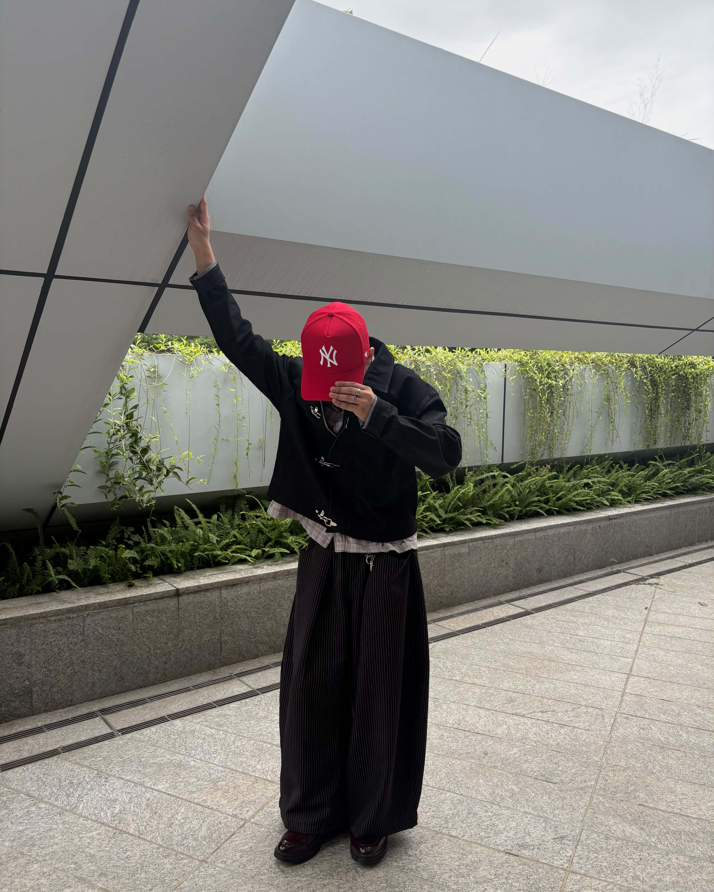
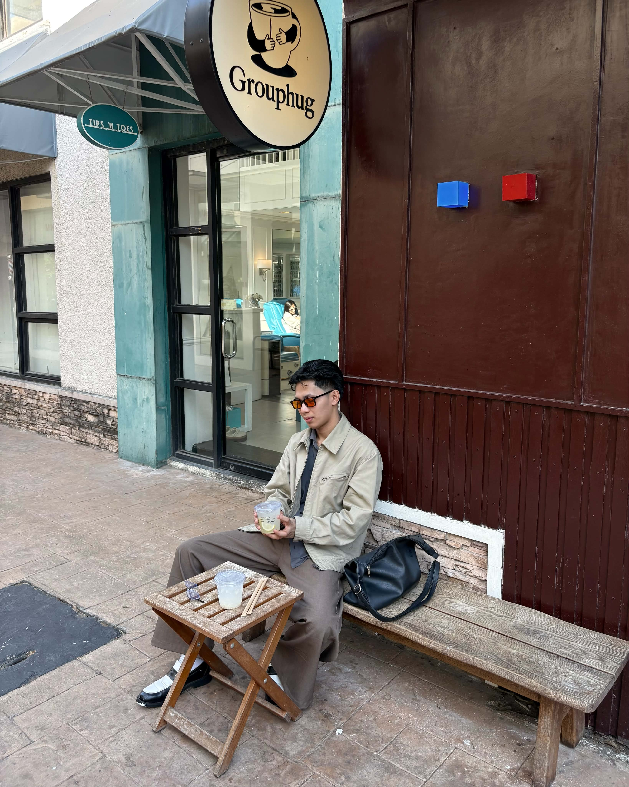
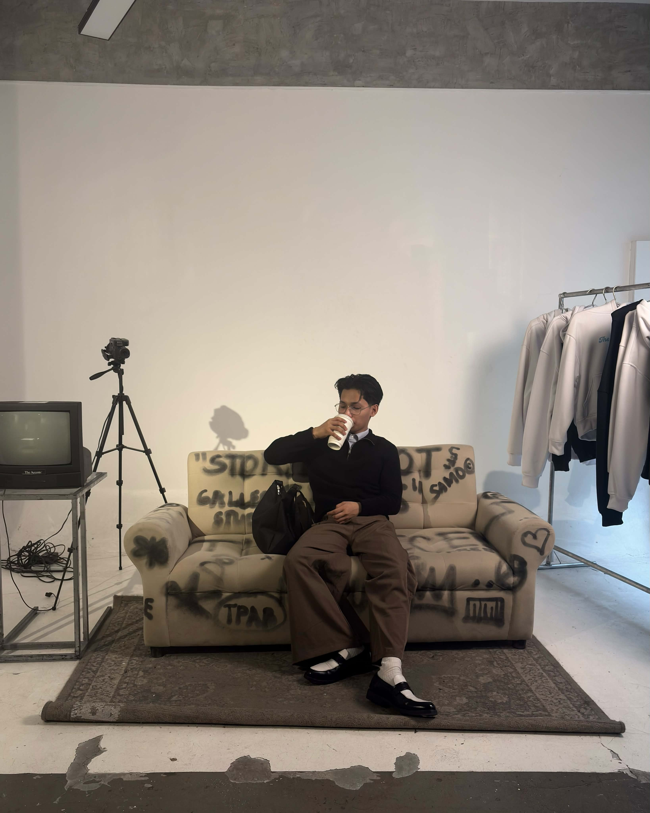
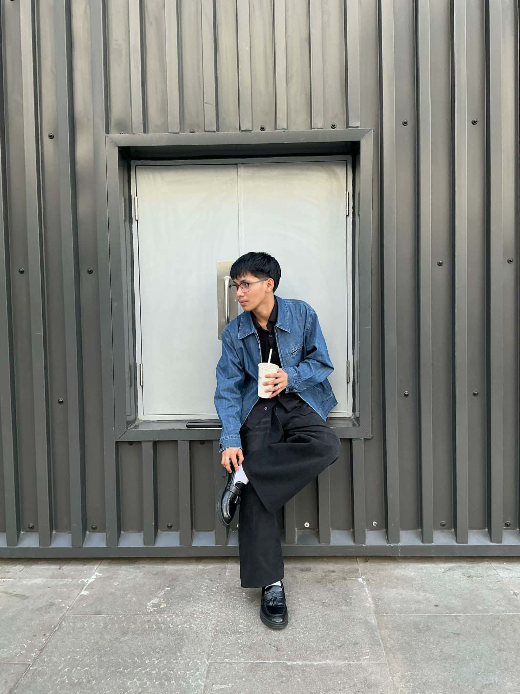

Fully Booked Bonifacio High Street
Bookstore, Taguig
Floor-to-ceiling shelves and warm lighting make this a great spot for cozy, editorial-style shots.

A guide to the most photogenic places to visit, from hidden corners to iconic backdrops.
I love scouting out unique, camera-ready spots and sharing them with anyone chasing the perfect shot.

Bookstore, Taguig
Floor-to-ceiling shelves and warm lighting make this a great spot for cozy, editorial-style shots.

Open field, Quezon City
Wide open green space with a great skyline view, perfect for golden hour photos.

Riverside park, Marikina
A scenic walkway along the river with bridges and greenery, ideal for casual outdoor shots.
